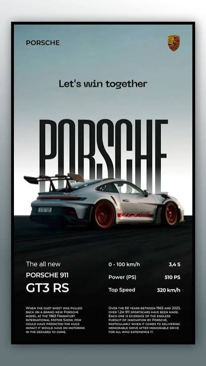

PORSHE 918 SPYDER
Nosotros
¿Quiénes somos?
Desde hace más de 70 años, en Porsche todo gira en torno a la fascinación por los autos deportivos a nivel mundial. Y desde el 2005, el Grupo Euromotors S.A, representante de importantes marcas alemanas y líder en el mercado automotor nacional se convierte en el importador oficial de Porsche en Perú.
)
Con alrededor de 1700 unidades de la marca circulando en nuestro país, el fabricante de Stuttgart cuenta con un amplio portafolio, una atención de primer nivel y uno de los centros de venta y servicio más importantes de la casa alemana en Latinoamérica, el Porsche Center Lima. Cada rincón fue creado para inspirar. Materiales, formas y atmósferas que capturan miradas y traducen el diseño
)
Publicidad
